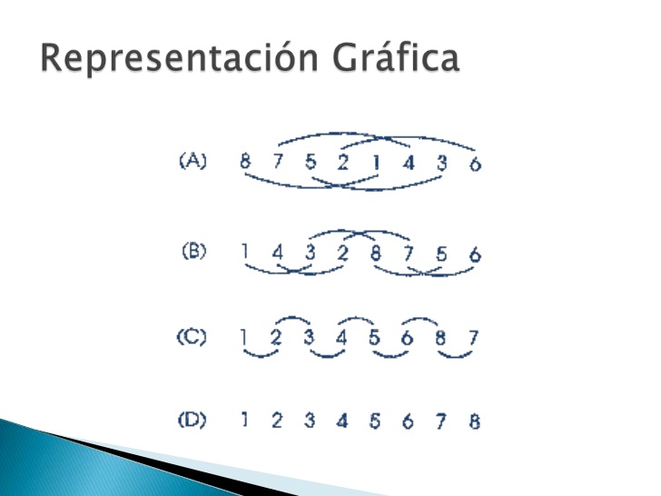

Debido a que las estructuras de datos son utilizadas para almacenar información, para poder recuperar esa información de manera eficiente es deseable que aquella esté ordenada. Existen varios métodos para ordenar las diferentes estructuras de datos básicas. En general los métodos de ordenamiento no son utilizados con frecuencia, en algunos casos sólo una vez. Hay métodos muy simples de implementar que son útiles en los casos en dónde el número de elementos a ordenar no es muy grande (ej, menos de 500 elementos). Por otro lado hay métodos sofisticados, más difíciles de implementar pero que son más eficientes en cuestión de tiempo de ejecución.
Los métodos sencillos por lo general requieren de aproximadamente n x n pasos para ordenar n elementos.
Los métodos simples son: insertion sort (o por inserción directa) selection sort, bubble sort, y shellsort, en dónde el último es una extensón al insertion sort, siendo más rápido. Los métodos más complejos son el quick-sort, el heap sort, radix y address-calculation sort. El ordenar un grupo de datos significa mover los datos o sus referencias para que queden en una secuencia tal que represente un orden, el cual puede ser numérico, alfabético o incluso alfanumérico, ascendente o descendente.
Se ha dicho que el ordenamiento puede efectuarse moviendo los registros con las claves. El mover un registo completo implica un costo, el cual se incrementa conforme sea mayor el tamaño del registro. Es por ello que es deseable evitar al máximo el movimiento de los registros. Una alternativa es el crear una tabla de referencias a los registros y mover las referencias y no los datos. A continuación se mostrarán los métodos de ordenamiento empezando por el más sencillo y avanzando hacia los mas sofisticados La eficiencia de los algoritmos se mide por el número de comparaciones e intercambios que tienen que hacer, es decir, se toma n como el número de elementos que tiene el arreglo a ordenar y se dice que un algoritmo realiza O(n2) comparaciones cuando compara n veces los n elementos, n x n = n2.
La Ordenación de burbuja (Bubble Sort en inglés) es un sencillo algoritmo de ordenamiento. Funciona revisando cada elemento de la lista que va a ser ordenada con el siguiente, intercambiándolos de posición si están en el orden equivocado. Es necesario revisar varias veces toda la lista hasta que no se necesiten más intercambios, lo cual significa que la lista está ordenada. Este algoritmo obtiene su nombre de la forma con la que suben por la lista los elementos durante los intercambios, como si fueran pequeñas "burbujas". También es conocido como el método del intercambio directo. Dado que solo usa comparaciones para operar elementos, se lo considera un algoritmo de comparación, siendo el más sencillo de implementar.
El ordenamiento Shell (Shell sort en inglés) es un algoritmo de ordenamiento. El método se denomina Shell en honor de su inventor Donald Shell. Su implementación original, requiere O(n2) comparaciones e intercambios en el peor caso. Un cambio menor presentado en el libro de V. Pratt produce una implementación con un rendimiento de O(n log2 n) en el peor caso. Esto es mejor que las O(n2) comparaciones requeridas por algoritmos simples pero peor que el óptimo O(n log n). Aunque es fácil desarrollar un sentido intuitivo de cómo funciona este algoritmo, es muy difícil analizar su tiempo de ejecución.
El algoritmo Shell sort mejora el ordenamiento por inserción comparando elementos separados por un espacio de varias posiciones. Esto permite que un elemento haga "pasos más grandes" hacia su posición esperada. Los pasos múltiples sobre los datos se hacen con tamaños de espacio cada vez más pequeños. El último paso del Shell sort es un simple ordenamiento por inserción, pero para entonces, ya está garantizado que los datos del vector están casi ordenados.
El ordenamiento por inserción (insertion sort en inglés) es una manera muy natural de ordenar para un ser humano, y puede usarse fácilmente para ordenar un mazo de cartas numeradas en forma arbitraria. Requiere O(n²) operaciones para ordenar una lista de n elementos.
Inicialmente se tiene un solo elemento, que obviamente es un conjunto ordenado. Después, cuando hay k elementos ordenados de menor a mayor, se toma el elemento k+1 y se compara con todos los elementos ya ordenados, deteniéndose cuando se encuentra un elemento menor (todos los elementos mayores han sido desplazados una posición a la derecha) o cuando ya no se encuentran elementos (todos los elementos fueron desplazados y este es el más pequeño). En este punto se inserta el elemento k+1 debiendo desplazarse los demás elementos.
El ordenamiento por selección (Selection Sort en inglés) es un algoritmo de ordenamiento que requiere O(n^2) operaciones para ordenar una lista de n elementos. Su funcionamiento es el siguiente:
Y en general: